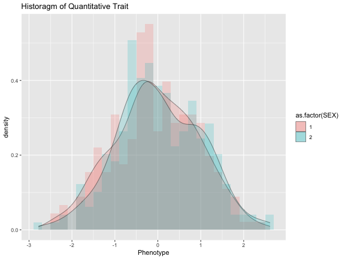

A joint analysis of location-scale (JLS) can be a powerful tool in genome-wide association studies to uncover previously overlooked markers that influence the quantitative traits through both mean and variance (Soave et al., 2015; AJHG). The gJLS2 package offers updated software support to the existing gJLS https://github.com/dsoave/gJLS/), which was developed to deal specifically with sample correlation and group uncertainty (Soave and Sun, 2017; Biometrics). Although the work was originally motivated by genetic association studies, application of the proposed method, however, is not limited to this type of data. The gJLS testing framework is useful for other scientific studies where location and scale parameters are both of interest.
The current gJLS2, as a unifying software package to gJLS, can additionally handle analyses of X-chromosomes through the recently available association testing methods for location (Chen et al., 2020; Biostatistics) and scale (Deng et al., 2019; Genetic Epidemiology). The package will offers convenient PLINK R-plugin scripts and a command-line Rscript for non-GUI usage.
The package can also be conveniently used in 1) a bash script as an R plugin function; and 2) Rscript that can be used from command line. For more details, see Section [A note on genome-wide analyses using R Plugin and R scripts].
To install either
install.packages("gJLS2")
or
#install.packages("devtools")
devtools::install_github("WeiAkaneDeng/gJLS2")
To load the library in R, simply run:
library(gJLS2)
We illustrate the use of gJLS on simulated phenotype and genotypes of X-chromosomal SNPs from the 1000 Genomes Project. The data can be loaded directly:
data("chrXdat")
head(chrXdat)
#> FID IID PAT MAT SEX PHENOTYPE rs5983012_A rs4119090_G rs5911042_T
#> 1 1328 NA06984 0 0 1 0.6665371 0 0 2
#> 2 1328 NA06989 0 0 2 -0.2565215 0 0 0
#> 3 1330 NA12340 0 0 1 0.2901142 0 2 0
#> 4 1330 NA12341 0 0 2 -0.4528928 0 2 0
#> 5 1330 NA12342 0 0 1 -2.2885722 0 2 2
#> 6 1334 NA12144 0 0 1 -0.2326356 0 2 2
#> rs986810_C rs180495_G
#> 1 0 0
#> 2 1 1
#> 3 2 2
#> 4 1 0
#> 5 2 0
#> 6 0 0
The phenotype data included in the dataset were simulated from a standard normal distribution without influence from the genetic sex, nor genotype variables. Though it is quite common to have phenotype with sex-specific distributions, which could lead to incorrect inference if ignored.
Thus, it is always a good idea to perform some exploratory data analysis prior to running \code{gJLS2}, to be aware of the potential non-normality trends (e.g. skewness or modality) as well as to spot any abnormalities in the distributions (e.g. any duplicates), either alone or when stratified by genetic sex, or possibly other suspected confounding factors.
library(ggplot2)
ggplot(data = chrXdat, aes(x=PHENOTYPE, fill=as.factor(SEX))) +
geom_histogram(aes(y = ..density..),alpha=0.2, position="identity",
binwidth = 0.2) + geom_density(alpha=0.2, size=0.2) +
ggtitle("Historagm of Quantitative Trait") + xlab("Phenotype")

print(summary(chrXdat$PHENOTYPE))
#> Min. 1st Qu. Median Mean 3rd Qu. Max.
#> -2.780851 -0.657590 -0.075777 -0.006869 0.730500 2.614816
mean(chrXdat$PHENOTYPE); sd(chrXdat$PHENOTYPE)
#> [1] -0.006869224
#> [1] 0.9743726
library(moments)
skewness(chrXdat$PHENOTYPE)
#> [1] -0.004267257
kurtosis(chrXdat$PHENOTYPE)
#> [1] 2.71659
The samples are restricted to the unrelated European subset ($n = 471$ with non-ambiguous sex information). To cover a range of minor allele frequencies (MAF), we hand-picked the following SNPs: rs5983012 (A/G), rs986810 (C/T), rs180495 (G/A), rs5911042 (T/C), and rs4119090 (G/A) that are outside of the pseudo-autosomal region (MAF calculated in females and rounded to the nearest digit, see table below).
#> CHR SNP A1 MAF
#> 1 23 rs5983012 A 0.1016
#> 2 23 rs986810 C 0.2033
#> 3 23 rs180495 G 0.3008
#> 4 23 rs5911042 T 0.4024
#> 5 23 rs4119090 G 0.4451
The location analysis automatically returns p-values from the recommended association model:
locReg(GENO=chrXdat[,7:11], SEX=chrXdat$SEX, Y=chrXdat$PHENOTYPE, Xchr=TRUE);
#> CHR SNP gL
#> 1 X rs5983012_A 0.9877674
#> 2 X rs4119090_G 0.9201569
#> 3 X rs5911042_T 0.3898029
#> 4 X rs986810_C 0.4619165
#> 5 X rs180495_G 0.8767590
The scale analysis automatically returns p-values from the recommended association model and assumes the residuals at the mean-stage are calculated using Least Absolute Deviation (LAD) rather than Ordinary Least Squares (OLS):
scaleReg(GENO=chrXdat[,7:11], SEX=chrXdat$SEX, Y=chrXdat$PHENOTYPE, Xchr=TRUE)
#> CHR SNP gS
#> 1 X rs5983012_A 0.1391909
#> 2 X rs4119090_G 0.9828430
#> 3 X rs5911042_T 0.1487017
#> 4 X rs986810_C 0.9563390
#> 5 X rs180495_G 0.3476929
scaleReg(GENO=chrXdat[,7:11], SEX=chrXdat$SEX, Y=chrXdat$PHENOTYPE, Xchr=TRUE, loc_alg="OLS")
#> CHR SNP gS
#> 1 X rs5983012_A 0.1739062
#> 2 X rs4119090_G 0.9999999
#> 3 X rs5911042_T 0.1163023
#> 4 X rs986810_C 0.9581589
#> 5 X rs180495_G 0.3619056
The joint-location-scale analysis is then straightforward by combining the sets of gL and gS p-values.
gJLS2(GENO=chrXdat[,7:11], Y=chrXdat$PHENOTYPE, SEX=chrXdat$SEX, Xchr=TRUE)
#> CHR SNP gL gS gJLS
#> 1 X rs5983012_A 0.9943538 0.1198837 0.3727472
#> 2 X rs4119090_G 0.8881506 0.9794193 0.9911401
#> 3 X rs5911042_T 0.3488576 0.1514217 0.2081701
#> 4 X rs986810_C 0.4898597 0.9244773 0.8116064
#> 5 X rs180495_G 0.8702304 0.3619588 0.6788681
In this section, we explore some common analytical scenarios and illustrate the different options available in gJLS2, specifically on how to deal with dosage genotypes, related samples and analysis of X-chromosome SNPs.
As a general comment, caution should be exercised to combine p-values using Fisher’s method when the trait under analyses were in different scales (e.g. log-transformed for location and un-transformed for scale analyses). In this case, we recommend a rank-based inverse normal transformation (transformed) the quantitative trait. This is also the default option in scaleReg for the scale association analyses and the joint analyses.
To improve coverage and boost power of detectection, imputation is now routinely used in genome-wide association studies. The process of imputation has been made easy by the publicly available reference panels (1000 Genomes Project) and softwares such as Impute2 (Howie et al., 2009; PLoS Genetics) and Beagle (Browning and Browning, 2009; American Journal of Human Genetics).
For a sample with $n$ individuals, the imputed genotypes can be a matrix of posterior genotype probabilities of dimension $n\times 3$ with each column corresponding to a particular genotype (denoted by $\eta(A/A)$, $\eta(A/B)$ or $\eta(B/B)$).
Alternatively, it is possible to have dosage data that is a vector of $n$ entries whereby the dosage value for each individual is calculated as where $\eta(A/A) + \eta(A/B) +\eta(B/B) = 1$ and 0, 1, 2 denote the additive genotype values coded for the number of alternative alleles (usually the minor allele).
Finally, the dosage values can be converted to discrete genotypes by setting a pre-defined threshold on the confidence of the posterior probability. For example, PLINK defines the hardcall threshold as the distance from the nearest hardcall: where $g_i$ are allele dosages ranging between 0 and 2. A hardcall threshold of 0.1 (i.e. less than) is usually used to retain SNPs with better imputation quality and a hardcall threshold of 0 sets all uncertain genotypes to be missing.
In our analyses, all three types of imputed data are accepted. The program will automatically detect the status of imputation based on 1) whether the genotype data is supplied as a vector or a matrix/data.frame; 2) whether the number of distinct genotype values exceeds 4 (0, 1, 2, and/or a missing code, usually -9 or NA).
Following Acar and Sun (2013), here we simulate the imputed data by introducing uncertainty using a Dirichlet distribution. A parameter $a \in [0,1]$ is used to for the correct genotype category and (1 − a)/2 for the other two, where $a = 1$ corresponds to a generative model with no genotype uncertainty and $a = 0.5$ corresponds to roughly 50\% of the “best-guess” genotypes will match the correct genotype groups.
library("MCMCpack")
#> Loading required package: coda
#> Loading required package: MASS
#> ##
#> ## Markov Chain Monte Carlo Package (MCMCpack)
#> ## Copyright (C) 2003-2021 Andrew D. Martin, Kevin M. Quinn, and Jong Hee Park
#> ##
#> ## Support provided by the U.S. National Science Foundation
#> ## (Grants SES-0350646 and SES-0350613)
#> ##
N <- 300
geno <- rbinom(N, 2, 0.3)
a <- 0.3 ## uncertainty
genPP <- rbind(rdirichlet(sum(geno==0),c(a,(1-a)/2,(1-a)/2)),
rdirichlet(sum(geno==1),c((1-a)/2,a,(1-a)/2)),
rdirichlet(sum(geno==2),c((1-a)/2,(1-a)/2,a)))
head(genPP);
#> [,1] [,2] [,3]
#> [1,] 0.7757769 2.218303e-01 0.002392827
#> [2,] 0.9984017 3.013217e-07 0.001597968
#> [3,] 0.8949852 3.126178e-02 0.073752994
#> [4,] 0.3116164 3.995173e-03 0.684388445
#> [5,] 0.9932653 6.172884e-03 0.000561811
#> [6,] 0.2234763 7.686409e-01 0.007882812
summary(rowSums(genPP))
#> Min. 1st Qu. Median Mean 3rd Qu. Max.
#> 1 1 1 1 1 1
The genotypic probability matrix/data.frame can be analyzed directly, but needs to be an item in a list since the program cannot distinguish the supplied matrix/data.frame is for an individual imputed SNP or a matrix of SNPs in discrete/dosage genotype values.
To analyzed the genotypic probabilities using a 2 degree-of-freedom (df) test, the genotypic option needs to be set to TRUE, otherwise the function automatically converts the genotypic probability matrix/data.frame to dosage data and then analyzes using a 1 df test. However, we cannot perform the original Levene’s test on the genotypic probabilities as supposed to discrete genotype values.
sex <- rbinom(N, 1, 0.5)+1 ## using PLINK coding
y <- rnorm(N)
covar <- matrix(rnorm(N*10), ncol=10)
gJLS2(GENO=list(genPP), SEX=sex, Y=y, COVAR=covar, genotypic = TRUE) ## geno probabilities
#> SNP gL gS gJLS
#> 1 SNP_1 0.09348609 0.1870613 0.08824716
gJLS2(GENO=list(genPP), SEX=sex, Y=y, COVAR=covar) ## geno dosage
#> SNP gL gS gJLS
#> 1 SNP_1 0.09348609 0.2358194 0.1061426
try(gJLS2(GENO=list(genPP), SEX=sex, Y=y, COVAR=covar, origLev = TRUE)) ## cannot perform Levene's test
#> SNP gL gS gJLS
#> 1 SNP_1 0.09348609 0.2358194 0.1061426
The related=TRUE option can be used to deal with related samples, usually indicated by the shared family ID (FID) in the PLINK tt>.fam</tt> files. A cluster assignment can be specified, for example, using the FID as a factor. If the clust argument is not specified, then the entire samples are treated as a single group constrained by a single correlation structure. The default option assumes a compound symmetric correlation structure whereby all pairwise samples within the same cluster/group have the same correlation. The argument cov.structure can also take other standard classes of correlation structures listed in corClasses from R package nlme. See ?corClasses. This option currently only applies to autosomal SNPs.
gJLS2(GENO=geno, SEX=sex, Y=y, COVAR=covar, related=TRUE, clust = rep(1:3, c(N/2, N/4, N/4)))
#> SNP gL gS gJLS
#> 1 SNP 0.1601864 0.1752936 0.1284001
Genotypes of a X-chromosome marker is sex-dependent and thus are generated separately for males and females, but assuming the allele frequency to be the same (I used 0.3):
genoX <- NA
genoX[sex==2] <- rbinom(sum(sex==2), 2, 0.3)
genoX[sex==1] <- rbinom(sum(sex==1), 1, 0.3)
table(genoX, sex)
#> sex
#> genoX 1 2
#> 0 102 68
#> 1 45 68
#> 2 0 17
For X-chromosome analyses, the option Xchr must be set to TRUE as the function cannot distinguish autosomal genotype ro X-chromosome genotype data. For the pseudo-autosomal regions of X-chromosome, this option can be set to FALSE.
locReg(GENO=genoX, SEX=sex, Y=y, COVAR=covar, Xchr=TRUE)
#> CHR SNP gL
#> 1 X SNP 0.8516859
The scale and joint analysis can be performed similarly following the default options of inverse-normal transformation (transformed=TRUE), using least absolute devation (LAD) to estimate residuals in the first stage (loc_alg=”LAD”), and assuming an additive model (genotypic=FALSE):
gJLS2(GENO=genoX, SEX=sex, Y=y, COVAR=covar, Xchr=TRUE)
#> CHR SNP gL gS gJLS
#> 1 X SNP 0.8564939 0.6859791 0.8999986
For both autosome and X-chromosome scale association, it is possible to choose between a genotypic test with 2 df (or 3 for X-chromosome with $GxS$ interaction) or 1 df (or 2 for X-chromosome with $GxS$) test. This is controlled by the option genotypic=TRUE.
As an additional option, the sex-stratified scale association p-values may also be reported by specifying origLev=TRUE, which gives the sex-specific (original) Levene’s test p-value. This can then be combined with sex-stratified location association p-values for a sex-stratified gJLS analysis using the gJLS2s function.
data("BMIsum")
gJLS2s(gL = BMIsum[,1:4], gS= BMIsum[,5])
#> CHR SNP BP gL gS gJLS
#> 1 16 rs1000014 24417536 4.3e-01 0.710 0.6675263538
#> 2 16 rs1000047 8138689 1.2e-01 0.550 0.2453946354
#> 3 16 rs1000077 82782756 1.9e-01 0.710 0.4051345825
#> 4 16 rs1000078 82782587 7.6e-01 0.610 0.8199846965
#> 5 16 rs1000100 59269792 3.9e-01 0.260 0.3334723738
#> 6 16 rs1000174 14471228 4.3e-01 0.014 0.0367982615
#> 7 16 rs1000193 6747102 1.1e-01 0.440 0.1949675645
#> 8 16 rs1000454 81589567 5.2e-03 0.420 0.0155644883
#> 9 16 rs1000455 81589585 2.9e-03 0.400 0.0090008289
#> 10 16 rs1000640 69905668 6.1e-02 0.100 0.0372067457
#> 11 16 rs1000686 77262198 1.3e-01 0.098 0.0683247299
#> 12 16 rs1000711 83888758 5.7e-01 0.530 0.6637128513
#> 13 16 rs1000742 55325460 8.5e-01 0.910 0.9721577025
#> 14 16 rs1001170 5082231 5.3e-01 0.160 0.2940405856
#> 15 16 rs1001171 5082289 5.9e-01 0.180 0.3443461903
#> 16 16 rs1001362 56674858 3.7e-01 0.670 0.5936535273
#> 17 16 rs1001493 72625552 7.8e-05 0.720 0.0006058151
#> 18 16 rs1001553 82487917 9.5e-01 0.970 0.9968349305
#> 19 16 rs1001554 82487790 8.6e-02 0.960 0.2884836269
#> 20 16 rs1001608 50881317 1.3e-02 0.950 0.0666171253
#> 21 16 rs1001631 60700940 3.9e-01 0.046 0.0900717603
#> 22 16 rs1001655 84441409 5.3e-01 0.590 0.6762171942
#> 23 16 rs1001722 73408313 3.3e-01 0.790 0.6111811586
#> 24 16 rs1001776 4222512 7.8e-01 0.960 0.9654153753
#> 25 16 rs1001872 48538811 9.9e-02 0.780 0.2749878940
#> 26 16 rs1001890 9304299 2.6e-03 0.380 0.0078247899
#> 27 16 rs1001897 9409104 8.6e-01 0.830 0.9544594316
#> 28 16 rs1001937 13531512 1.0e-04 0.890 0.0009190918
#> 29 16 rs1002077 76498403 1.3e-02 0.053 0.0057051055
#> 30 16 rs1002078 76498960 4.7e-03 0.056 0.0024326514
#> 31 16 rs1002252 71286676 2.1e-02 0.380 0.0465299186
#> 32 16 rs1002403 26354051 5.8e-01 0.550 0.6834779722
#> 33 16 rs1002456 57852819 2.1e-02 0.940 0.0972216368
#> 34 16 rs1002505 59269167 7.2e-01 0.280 0.5244563001
#> 35 16 rs1002965 3230472 2.2e-01 0.700 0.4421036122
#> 36 16 rs1002970 13432333 3.4e-02 0.022 0.0061321845
#> 37 16 rs1002975 76501609 2.8e-03 0.048 0.0013325344
#> 38 16 rs1003067 14248851 7.4e-03 0.780 0.0355251399
#> 39 16 rs1003158 60950591 2.2e-02 0.820 0.0904735543
#> 40 16 rs1003172 20524874 7.5e-01 0.820 0.9139718019
#> 41 16 rs1003192 55726670 1.7e-03 0.780 0.0101115302
#> 42 16 rs1003330 3541039 1.3e-01 0.870 0.3595995155
#> 43 16 rs1003341 25548973 1.2e-01 0.980 0.3693188302
#> 44 16 rs1003597 6040598 8.7e-01 0.610 0.8669294371
#> 45 16 rs1003603 11114623 9.7e-01 0.750 0.9589477812
#> 46 16 rs1003614 7630143 1.7e-01 0.110 0.0931116338
#> 47 16 rs1003615 7630218 1.5e-01 0.093 0.0735482470
#> 48 16 rs1003677 6456763 3.2e-01 0.340 0.3501449412
#> 49 16 rs1003830 26788718 3.6e-01 0.780 0.6374476200
#> 50 16 rs1004041 1271890 6.6e-01 0.380 0.5976813471
#> 51 16 rs1004047 90053336 1.8e-02 0.370 0.0400374944
#> 52 16 rs1004098 27818054 3.4e-02 0.190 0.0390321337
#> 53 16 rs1004101 19346639 4.7e-01 0.170 0.2818056562
#> 54 16 rs1004185 23914632 5.4e-01 0.044 0.1126165024
#> 55 16 rs1004187 23916258 5.1e-01 0.038 0.0958052950
#> 56 16 rs1004281 71357918 1.4e-02 0.400 0.0346359366
#> 57 16 rs1004299 54343840 7.5e-01 0.490 0.7353792454
#> 58 16 rs1004363 57595999 5.5e-01 0.930 0.8544135353
#> 59 16 rs1004507 6456665 4.7e-01 0.500 0.5753198947
#> 60 16 rs1004637 14205744 5.5e-05 0.220 0.0001490999
#> 61 16 rs1004695 84917408 2.8e-01 0.160 0.1839285119
#> 62 16 rs1004704 48537421 2.2e-01 0.640 0.4168264088
#> 63 16 rs1004749 23314851 3.4e-01 0.930 0.6802664680
#> 64 16 rs1004792 3094261 2.0e-02 0.710 0.0746140891
#> 65 16 rs10048076 10931623 8.1e-01 0.960 0.9731998569
#> 66 16 rs10048083 3417465 8.3e-01 0.850 0.9516126222
#> 67 16 rs10048086 69492274 1.2e-02 0.890 0.0591606045
#> 68 16 rs10048092 48440630 6.5e-01 0.640 0.7808611278
#> 69 16 rs10048094 80243012 1.6e-01 0.970 0.4443439122
#> 70 16 rs10048136 10929441 8.5e-01 0.880 0.9651835212
#> 71 16 rs10048138 81264177 8.4e-01 0.400 0.7024564240
#> 72 16 rs10048140 86399781 9.7e-01 0.860 0.9854255255
#> 73 16 rs10048142 86399806 9.9e-01 0.960 0.9987490628
#> 74 16 rs10048143 86399882 9.8e-01 0.890 0.9914615959
#> 75 16 rs10048146 86710660 2.4e-01 0.960 0.5686129959
#> 76 16 rs10048148 3417450 1.4e-01 0.280 0.1661718785
#> 77 16 rs1004867 49635132 5.5e-01 0.770 0.7873719474
#> 78 16 rs1004892 19356105 9.3e-01 0.880 0.9824106863
#> 79 16 rs1004909 48725580 6.5e-04 0.340 0.0020812339
#> 80 16 rs1004911 57575397 1.6e-02 0.900 0.0754635898
#> 81 16 rs1004928 19357771 9.2e-01 0.830 0.9695514625
#> 82 16 rs1004930 54345296 6.0e-02 0.960 0.2220038042
#> 83 16 rs1004936 9949163 4.6e-02 0.520 0.1132143252
#> 84 16 rs1004998 49633732 6.2e-01 0.810 0.8480936812
#> 85 16 rs1005190 855717 2.0e-01 0.300 0.2288046430
#> 86 16 rs1005410 13701374 9.1e-01 0.220 0.5222093701
#> 87 16 rs1005454 1246270 3.3e-01 0.820 0.6243049302
#> 88 16 rs1005481 13863731 5.3e-01 0.140 0.2671935418
#> 89 16 rs1005482 13863740 1.4e-01 0.590 0.2885833864
#> 90 16 rs1005588 27590474 2.0e-01 0.066 0.0703235075
#> 91 16 rs1005697 57842705 5.0e-01 0.400 0.5218875825
#> 92 16 rs1005699 55159147 2.1e-01 0.560 0.3693188302
#> 93 16 rs1005700 55159234 2.9e-01 0.530 0.4415420790
#> 94 16 rs1005715 74514032 2.3e-04 0.650 0.0014663280
#> 95 16 rs1005912 55504827 3.2e-01 0.620 0.5193060647
#> 96 16 rs1005913 55504521 6.9e-01 0.880 0.9101302905
#> 97 16 rs1005924 78325937 3.4e-02 0.990 0.1478160417
#> 98 16 rs1006225 86063938 4.3e-01 0.530 0.5649295373
#> 99 16 rs1006305 27172885 7.2e-02 0.980 0.2576351542
#> 100 16 rs1006306 27172977 8.8e-02 0.840 0.2664647353
Considering the computational and memory requirement of genome-wide data, the package offers two possible approaches for running the gJLS analyses: 1) using the stand-alone package in R environment (GUI or as a command-line program through \texttt{Rscript}), or 2) using the genetic software PLINK via an R plugin function.
In general, we recommend the users to divide the genotype data by chromosome and maybe take advantage of parallel computing when using a server with multiple cores or processors.
The Rscript (“run_gJLS2.R”) in the extdata folder can serve as a starting point to customized the analyses for each user. The arguments available in this Rscript included the very basic ones and additional ones can be added easily. A useful option is “write”, where the user can specify the chunk size for results to be written in the file as the program runs. Another important feature is the “nThreads” option, where the user can take advantage of the multiple cores and processors available from high performance computing clusters.
As an example, in the extdata directory, the Rscript can be excuted on the command line and output the results:
Rscript run_gJLS2.R --bfile ./input/chrX_5_snp \
--pfile ./input/Pheno.txt \
--pheno pheno1 \
--Xchr TRUE \
--nThreads 2 \
--covar SEX,covar1,covar2,covar3 \
--out ./output/testRun.results.txt
Alternatively, summary statistics can also be analyzed using the command-line option:
Rscript run_gJLS2.R --sumfile ./input/GIANT_BMI_chr16_gJLS_summary.txt \
--out ./output/GIANT_BMI_Sum.chr16_results.txt &
We illustrate gJLS analyses using simulated phenotype, covariates, and real X-chromosome genotypes from 1000 Genomes Project via a simple yet adaptable R plugin function; the function can be easily modified to suit the user’s needs.
Before we start, we have to make sure both \package{gJLS2} and \package{Rserve} packages are installed. More details on the R plugin function can be found here. In some cases, the default port does not work and you can specify a port number when starting \package{Rserve} and in PLINK.
The following R plugin script is quite simple since the majority of the coding is now nested in the gJLS2 function. Notice that for X-chromosome, the genetic sex must be provided and this is done through setting the first column of the covariate file to be the sex variable. To run PLINK R plugin function, save this coding chunk into an R script and give it a name, such as ‘run_gJLS2.R’.
Rplink <- function(PHENO,GENO,CLUSTER,COVAR){
require(gJLS2)
f1 <- function(s)
{
r <- gJLS2(GENO=s, SEX=ifelse(COVAR[,1]==0, 2, COVAR[,1]), Y=PHENO, COVAR=COVAR[,-1], Xchr=TRUE)
rr <- as.numeric(r[3:5])
c( length(rr) , rr )
}
apply( GENO , 2 , f1 )
}
The remaining step is done in the bash command line by calling PLINK and you can test the script with the files extracted from the file 1KG_example.zip.
R CMD Rserve --RS-port 8221 --no-save
plink --bfile ./input/chrX_5_snp \
--R run_gJLS2PLINK_Xchr.R \
--pheno ./input/Pheno.txt \
--pheno-name pheno1 \
--R-port 8221 \
--covar ./input/Pheno.txt \
--covar-name SEX,covar1,covar2,covar3 \
--out ./output/testRun
The PLINK only has an option to debug the script when necessary, it can be done on a subset of the data using the following:
plink --bfile ./input/chrX_5_snp \
--R run_gJLS2PLINK_Xchr.R \
--R-debug \
--pheno ./input/Pheno.txt \
--pheno-name pheno1 \
--R-port 8221 \
--covar ./input/Pheno.txt \
--covar-name SEX,covar1,covar2,covar3 \
--out ./output/testRun
This generates a “testRun.debug.R” file in which the data needed for the analysis are stored, and the user can proceed to debug in R:
source("testRun.debug.R")
require(gJLS2)
f1 <- function(s)
{
r <- gJLS2(GENO=s, SEX=ifelse(COVAR[,1]==0, 2, COVAR[,1]), Y=PHENO, COVAR=COVAR[,-1], Xchr=TRUE)
rr <- as.numeric(r[3:5])
c( length(rr) , rr )
}
apply(GENO , 2 , f1)
The gJSL2 analyzes each SNP at a time, it is straightforward to divide-and-conquer irrespective of your programming choice. Here I list some possible user scenarios and our recommendation on which approach to use. The reader is also encouraged to experiment to find the best approach according to their own computing specifications.
I have genotype and phenotype data, but already ran the location analysis (GWAS) using other methods (e.g. PLINK or BOLT-LMM) or plan to use published GWAS p-values. I am interested in the gS analysis and the combined gJLS analyses using existing location p-values in place of the gL.